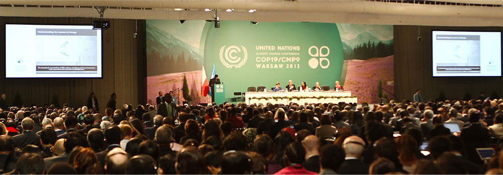

环保任重而道远
从2009年哥本哈根世界气候大会的掀起到如今各国减排方案的争执不休，全球变暖这一环境话题不再只是科研圈的研究课题，普罗大众也开始关心这一关乎未来发展的大问题。《面对面》栏目曾播出一期中国著名记者柴静对话中科院副院长、第四纪地质学家丁仲礼院士的访谈节目，带我们解读了这一时代话题，节目播出后被大量转载和评论。
时逾几年，这段视频仍引起人们的广泛热议，在这场此起彼伏的议论声中，极端骂战也不罕见。知乎网站上就有很多人大骂，视频里柴静明显站在西方发达国家那边，没有保持一个媒体人应该有的客观、中立态度，提问过程总带有陷阱性，总一味纠结于政治解读。初看这段视频，再见这段评论，确实有那么几分意思，但稍作深思，其实在面对这一关乎政治、环境、国家利益的大问题上，激烈的对立面无论是在国际会议还是网络论坛上都几乎分秒必现，柴静愈是站在普通人甚至所谓西方“ 主流派 ”的角度发问，其实更有助于修缮丁院士的言辞，让流言得到正面回击，借此解开人们心中的疑惑，毕竟文明式的对话摩擦比起闹市喧嚣事半功倍又喜闻乐见得多，从这点来看，柴女士该是“ 无罪反而有功 ”。而关于利益代表的争论，在这样一档面对亿万国人的访谈中，比起对问题本身的剖析，显得舍本逐末了。
再细看每个回合的对话，更不禁引人深思，当前，老百姓对于这一话题了解多少，又持什么态度？其实说柴女士是站在西方国家的角度，还不如说只是站在中国普通民众的思维角度，尽管国民心中有着捍卫祖国利益的红心，但关于环保本身的意识和利益维权的见地却是比较模糊的，也就不难预见糊里糊涂跟着潮流呼声“一边倒”的悲剧。 有人说丁院士应答从容，谁又知道比起访谈里的“咄咄逼人”，他早已在哥本哈根会议上面对强势披荆斩棘，只为寻求一声“公平”；有人说丁院士见识卓远，但他不过同万千科研工作者一样期望的是亿万民众主动担起环保己任，主动打开视角关爱我们的环境。人们还在高呼“拯救地球”，却不知其实更该说是一场自我救赎，丁院士的“乐观”（地球不需要我们拯救，我们的生存环境才是我们需要自救的）和很多人的“悲观”（地球将要毁灭，我们无能为力）正赤裸裸的反映着大众人云亦云的环保观念和表面式关注。或许当“碳排放交易”最终推行到每个生产生活环节时，人们才将不得不关注这一影响自身收益的“梗”。
大洋彼岸的西方，《Silent Spring》（寂静的春天）开启了世界范围的环境保护运动，《Our Stolen Future》（我们失窃的未来）又给我们敲了一次沉痛的警钟，但我们在对大众的环保科普上似乎还未诞生如此影响深远的本土鸿作，我们靠着碎片化的报道汲取零星的知识补给，而往往还是只有已经明显威胁到一部分群体生命健康的那部分碎片信息才能来到我们的视线里，钻进我们的耳朵里，再随着事件的尘埃落定短时间内偃旗息鼓。不得不说关于环保科普，我们任重道远！